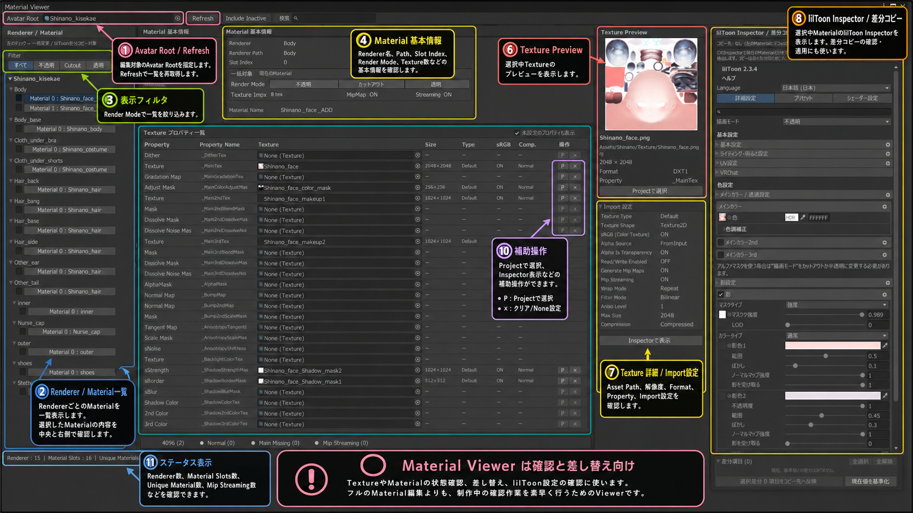

Material / Texture
Material Viewer
Avatar内のRenderer・Material・Textureを一覧で確認し、Texture差し替えやlilToon設定確認を行うためのViewerです。

基本操作
- Avatar Rootを指定してRefresh。 RendererとMaterialの一覧を取得します。
- 左側からMaterialを選択。 Renderer階層ごとのMaterial Slotを確認できます。
- 基本情報を確認。 Renderer、Path、Slot Index、Render Mode、Texture数などを確認します。
- Texture Property一覧を確認。 Main Texture、Mask、Normal MapなどのTextureを一覧で確認・差し替えできます。
- Texture Previewを確認。 Asset Path、解像度、Format、Import設定を確認します。
- lilToon Inspectorを確認。 選択MaterialのlilToon設定を同じ画面で確認・編集できます。
用途
Material ViewerはフルMaterial Editorではなく、制作中のMaterial / Texture状態確認と差し替えを中心にしたViewerです。Rendererを跨いでTextureやMaterial構成を確認するときに使用します。
Render Mode変更など、対応する一括操作はUndo対象として処理されます。